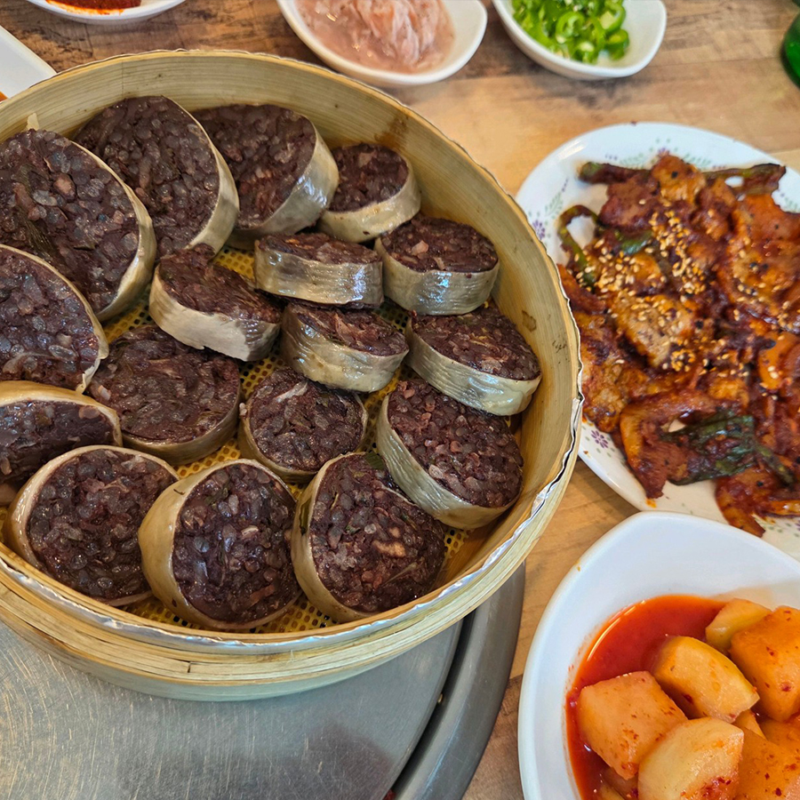
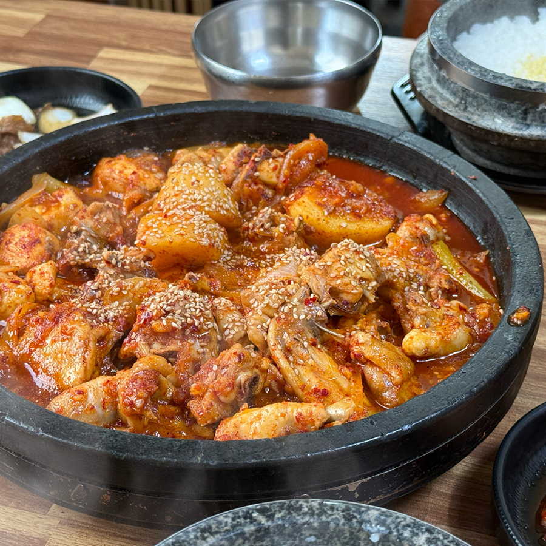
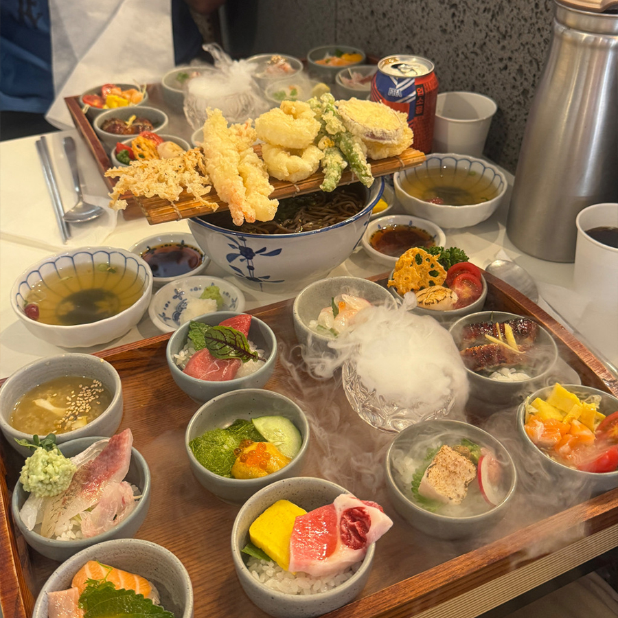

승아의 맛집을 소개합니다.
Home
경북
서울.경기
대구
경북
01

백년가게 용궁순대
경상북도 예천군 용궁로
용궁막창순대, 오징어불고기
용궁막창순대 15,000원 | 오징어불고기 13,000원
막창순대와 오징어불고기를 꼭 같이 드셔야 합니다.
같이 안먹는다면 이 가게를 간 의미가 없어요.
맛집 보러 가기
02

동악골 금재가든
경상북도 안동시 동악골길
닭볶음탕
1마리 30,000원
이 집의 닭볶음탕을 먹으면 맛을 절대 잊을 수 없어요
돌솥밥과 꼭 같이 드세요.
맛집 보러 가기
03

경주동
경상북도 경주시 황리단길 내부
오마카세동
28,000원
경주가면 먹는 일식집입니다
오마카세동을 시켜 여러가지 맛을 볼 수 있어요.
맛집 보러 가기